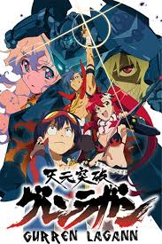
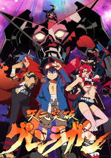
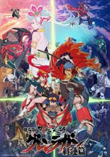
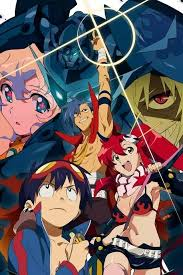
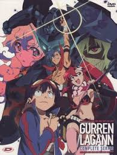
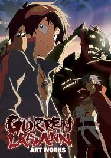
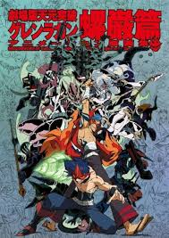

article
Gurren Lagann, known in Japan as Tengen Toppa Gurren Lagann (Japanese: 天元突破グレンラガン, Hepburn: Tengen Toppa Guren Ragan, lit. "Heaven-Piercing Gurren Lagann"), is a Japanese mecha anime television series animated by Gainax and co-produced by Aniplex and Konami. It ran for 27 episodes on TV Tokyo between April and September 2007. It was directed by Hiroyuki Imaishi and written by veteran playwright Kazuki Nakashima. Gurren Lagann takes place in a fictional future where the Spiral King, Lordgenome, rules Earth and forces mankind to live in isolated subterranean villages. The plot focuses on two teenagers, Simon and Kamina, who live in a subterranean village and wish to go to the surface. Using a mecha known as Lagann, they reach the surface and start fighting alongside other humans against Lordgenome's forces before fighting the forces of their true enemy
Gurren Lagann was released in 2007 on the same day of the 11th Anime Awards.
In North America, although initially announced to be licensed by ADV Films in 2007, the license was transferred to Bandai Entertainment in 2008 and then to Aniplex of America in 2013. In the United Kingdom, it was licensed by Manga Entertainment in 2007, then transferred to Beez Entertainment in 2008, and then to Anime Limited in 2013. The Sci Fi Channel acquired the broadcasting rights of Gurren Lagann and began airing it in July 2008, as part of Sci Fi's Ani-Monday anime block. A manga adaptation was published by ASCII Media Works between 2007 and 2013, which Bandai Entertainment licensed and released in English in North America. A series of four light novels was published by Shogakukan between 2007 and 2008. A Nintendo DS video game was released in October 2007, bundled with a special episode of the anime series. Two animated film versions were produced; the first premiered in Japanese theaters in September 2008, and the second premiered in April 2009.
Gurren Lagann has received several awards, including the 7th Tokyo Anime Awards, the 12th Animation Kobe and the Excellence Prize at the 11th Japan Media Arts Festival.
As of 2021, alongside Imaishi's other works during his time in Gainax, the rights to the series are owned by Studio Trigger, which was formed by Imaishi in 2011.
Anime







Nama: Gurren Lagann
Genre: Action
Rilis: 2007
Pemain: Simon, Kamina
Sutradara: Hiroyuki Imaishi
Penulis: Kazuki Nakashima
Stasiun: Bandai Entertainment, Aniplex, Konami
Gurren Lagann Best Anime In The World!!!!!